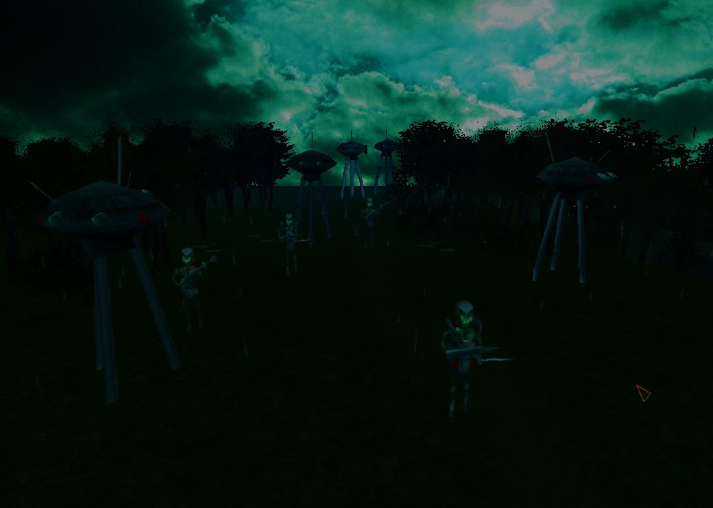

(See also: Tech Tree, Units, Screenshots)

Major stuff we've yet to finish
- Maps and tilesets suited to sci-fi
- Artwork for resources
- The plasma shield to be an upgrade of turret; currently you can research it but you start with one and you can't build more. Big bug!
- A megapack-compatible version of the faction (re-map the resources, basically)
Minor bugs we've noticed:
- The unit sizes need fixing so units don't intersect each other's artwork when close
- The plasma shield particle image is too low res and is acutally slightly clipped. Should be nicer. Please contribute!
- Really want a smooth morph when the capsule turns into an assault droid
Please report bugs you find, fix or just feedback on the forum or on github.
Thinks we want from the Engine:
- Build animations to be configurable so we can specify they should only animate once
- Particle effects can be generated in a flat circle rather than sphere
- Particle effects can fly away from centre-point of generation, rather than all in the same direction
- Multiple projectile particle effects
{kind=link}